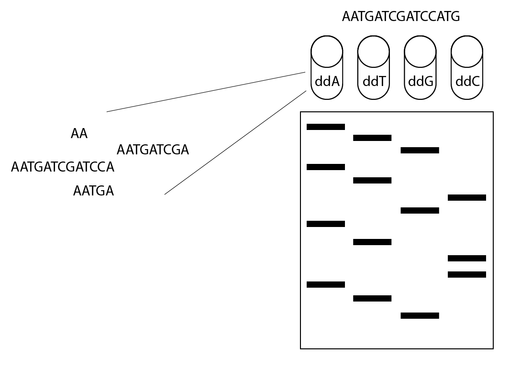
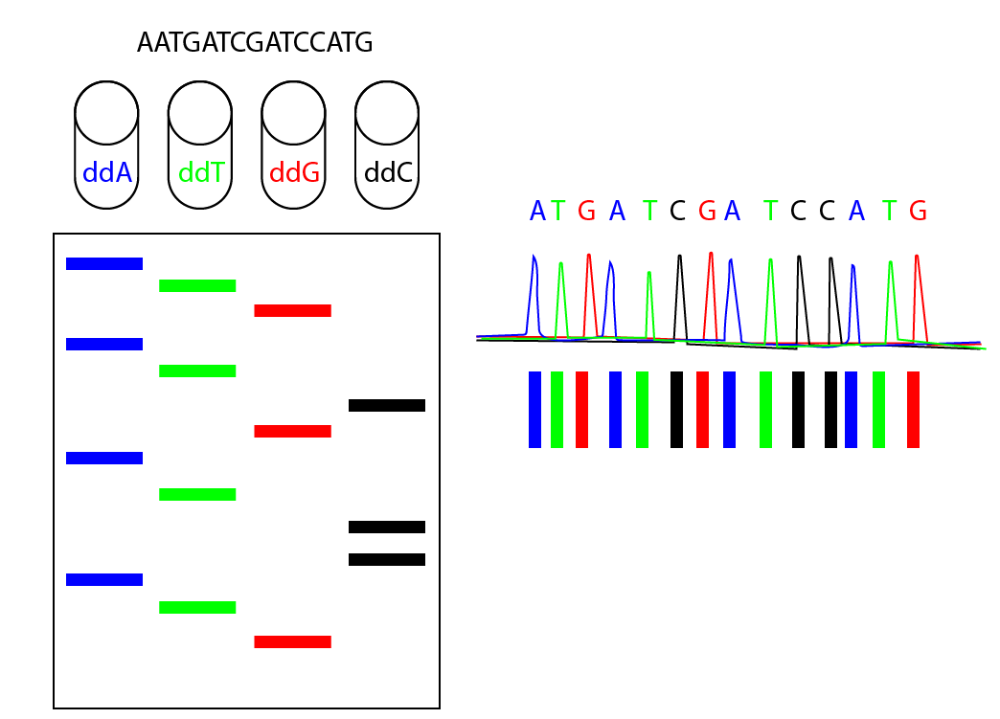
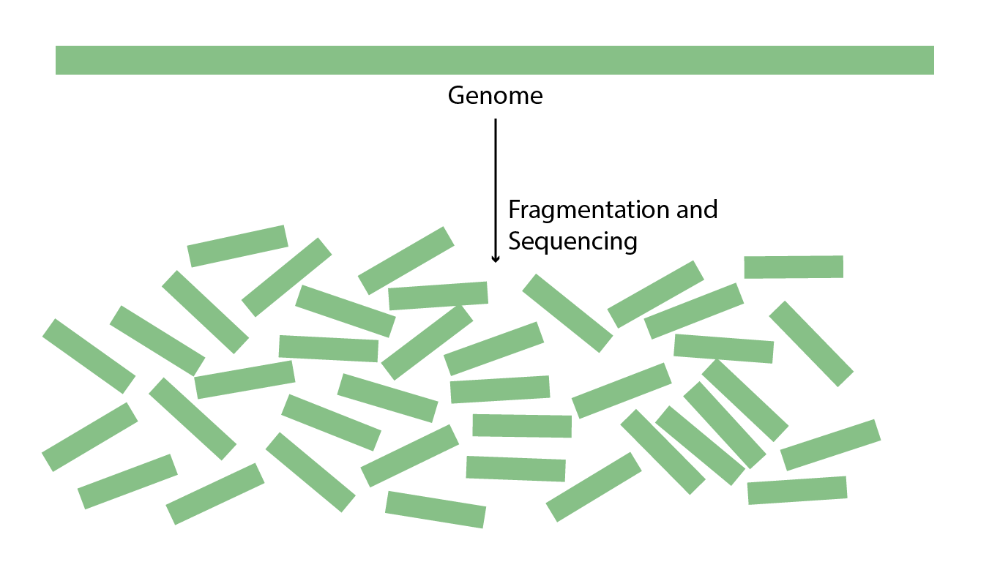
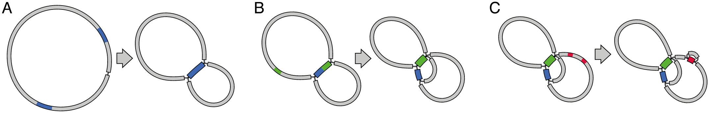
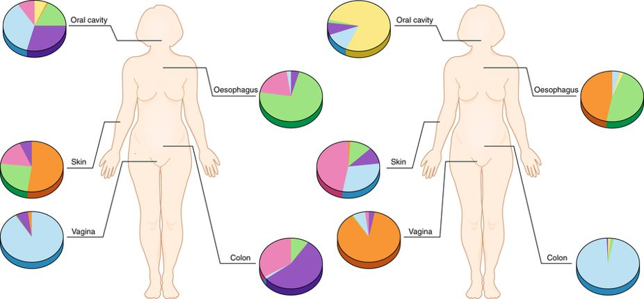
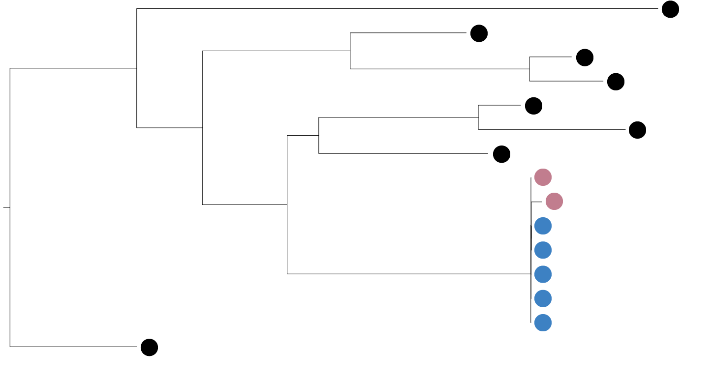

The ATGCs of whole genome sequencing for Public Health
Kelsey Florek, MPH, PhD
2018 Wisconsin Virology Conference
June 19, 2018
Slides available at:
www.k-florek.net/talks
How sequencing is performed
How information is analyzed
How sequencing informs Public Health
Discovery of DNA
- 1869 - Johann Friedrich Miescher discovered 'nuclein'
- "...entire family of such phosphorus-containing substances, which differ slightly from one another, will reveal itself, and that this family of nuclein bodies will prove tantamount in importance to proteins."
Miescher F (1871c) Ueber die cheische Zusammensetzung der Eiterzellen. Medicinsich-chemische Untersuchungen 4:441-460
- 150 years later...
Sanger's method of sequencing
1977 - Frederick Sanger: dideoxy chain-termination method

Sanger's method of sequencing
1977 - Frederick Sanger: dideoxy chain-termination method

Sanger's method of sequencing
1977 - Frederick Sanger: dideoxy chain-termination method
- limited to ~800bp for each sequence
- high per base-pair cost
- time consuming
- gold standard for accuracy
Generating Sequence information
short read
- 300bp max
- millions of reads
- 99.9999% accuracy
- low cost per sample
long read
- 2.3mb reads
- thousands of reads
- 98% accuracy
- high cost per sample
Analyzing sequencing data and reconstructing genomes
amplicon sequencing

Shotgun whole-genome assembly

Shotgun whole-genome assembly

Issues with repeats and short reads

Metagenomic approaches

The Public Health benefits of sequencing
Sequencing as a method of characterization
- Biochemical - characterization of metabolic pathways
- Physical - caracterization of proteins (MALDI-TOF)
- Genetic - caracterization of genes and gene variants
Outbreak identification

Sequencing advances Public Health
- Offers more precise examination of organisms
- Streamlined work flow -> sequencing parallelizes many laboratory methods
- Sequencing information is valuable and easily shared leading to improvement in many areas


{kind=link}